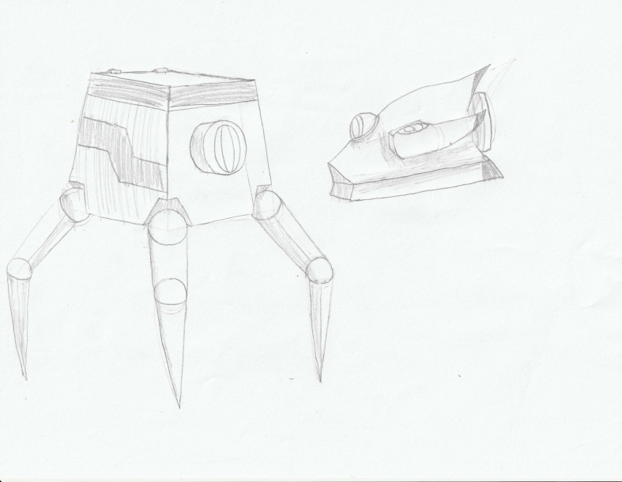
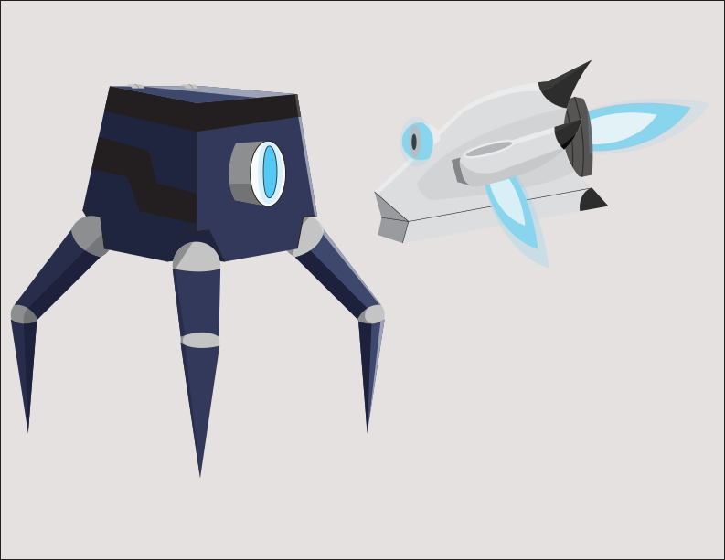

I had to draw a reference image and recreate it in Adobe Illustrator for a project.

This is the recreation. Also, I will give you a brief description of them.
Sp1der (on left) is an all purpose utility droid; it is best suited for exploration.
Orb (on right) is a scout drone that uses high speed and flight to quickly servey land.
